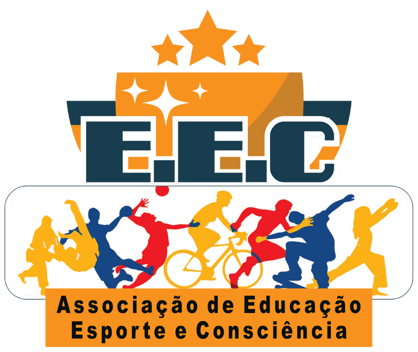

AEEC
Instituição de Vilhena voltada ao estímulo ao esporte, à educação e à consciência social. Participa da organização de competições, ações comunitárias e projetos de acesso à prática esportiva.
Portfólio institucional da Associação de Educação, Esporte e Consciência e da Polaco Cycling Team Eventos. Uma trajetória de iniciativas esportivas, formação, inclusão e impacto comunitário.

Associação de Educação, Esporte e Consciência
CNPJ 57.641.739/0001-08

Equipe e marca de organização esportiva
Coordenação de Alessandro Gomes
Atuamos na concepção, planejamento e coordenação de projetos esportivos. Reunimos atuação associativa, conhecimento operacional e uma rede de serviços especializados para viabilizar eventos de diferentes dimensões.
Instituição de Vilhena voltada ao estímulo ao esporte, à educação e à consciência social. Participa da organização de competições, ações comunitárias e projetos de acesso à prática esportiva.
Marca e equipe com experiência na execução de eventos esportivos. Sua trajetória parte do ciclismo e se amplia para corridas de rua e diferentes formatos de competição.
As edições abaixo integram a trajetória recente da organização. Os indicadores são identificados pela natureza dos dados disponíveis; inscrições e concluintes não são medidas equivalentes.
17 de novembro · Vilhena/RO · início da sequência atual do evento
3 de agosto · Evento AABB/FENABB, com planejamento e organização de AEEC e Polaco
22 de novembro · Vilhena/RO · organização Polaco Cycling
26 de julho · Evento AABB/FENABB, com planejamento e organização de AEEC e Polaco
15 de novembro · Vilhena/RO · edição com Central do Atleta e recursos digitais próprios do evento
Esta sequência de corridas de rua começa em 2024. Eventos anteriores de outras organizações que utilizaram o nome Portal da Amazônia não integram a contagem das edições acima.
Podemos coordenar o ciclo completo de realização de eventos, conforme a necessidade da instituição contratante. Serviços técnicos específicos são executados por profissionais e empresas especializadas contratadas para cada projeto.
Formato do evento, cronograma, orçamento, regulamento, percurso, estrutura, públicos e articulação com entidades envolvidas.
Coordenação de infraestrutura, inscrições, kits, montagem, equipes de apoio, sinalização e fornecedores contratados.
Artes, materiais informativos, cobertura digital, orientação aos participantes, suporte à apuração e consolidação pós-evento.
Cronometragem, segurança e atendimento médico são serviços de terceiros planejados, contratados e coordenados conforme o evento e a legislação aplicável.
Um processo de trabalho que oferece previsibilidade e facilita a participação de instituições, empresas, parceiros e equipes técnicas.
Objetivos, público e escopo
Regulamento, orçamento e fornecedores
Divulgação, inscrições e preparação
Operação, percurso e apoio
Resultados, registros e avaliação
A combinação de planejamento, gestão local e apoio especializado permite adaptar o projeto às necessidades da instituição responsável pelo evento.
Definição de regras, modalidades, critérios, documentos e orientações.
Informações ao atleta, avisos, consultas, formulários e páginas digitais.
Fluxos, sinalização, estrutura, hidratação, kits e operações de campo.
Articulação de profissionais, fornecedores e serviços especializados.
Materiais gráficos, informação pública, cobertura e comunicação com participantes.
Interlocução com entidades, projetos sociais, famílias e grupos esportivos.
O calendário abaixo apresenta previsões de realização. Datas exatas, formatos, percursos e demais definições dependem do planejamento das instituições envolvidas.
Local previsto: AABB de Vilhena. Evento da AABB/FENABB, com planejamento e organização por AEEC e Polaco, sujeito a confirmação de escopo e calendário.
Continuidade do projeto iniciado em 2024. Local, data, categorias e formato a confirmar.
As galerias e os resultados são referências de acervo. O álbum fotográfico final do portfólio será montado com arquivos em alta resolução e autorizados para publicação.
Fotografias do pódio e registros gerais por Wellington Vilela.
Consultar acervo ↗Galeria de fotografias do evento em Vilhena.
Consultar acervo ↗Exemplo implementado de comunicação, avisos, regulamento e serviços ao participante.
Ver solução do evento ↗Créditos fotográficos e autorizações serão observados na publicação de imagens. Não são utilizados retratos gerados por inteligência artificial.
Instituições públicas, entidades, escolas e empresas podem discutir iniciativas esportivas, organização de eventos, ações inclusivas e projetos comunitários. A forma de contratação e as responsabilidades são definidas conforme cada demanda.
AEEC & Polaco Cycling Team Eventos
Vilhena — Rondônia
Contato institucional e canais oficiais: informações a inserir após validação da organização. Este material apresenta capacidades e histórico, sem constituir oferta contratual ou orçamento.